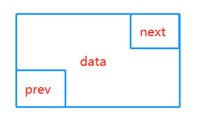
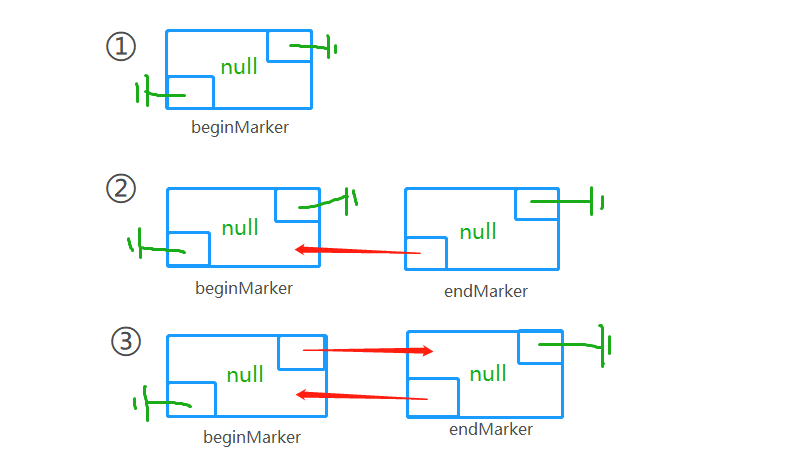
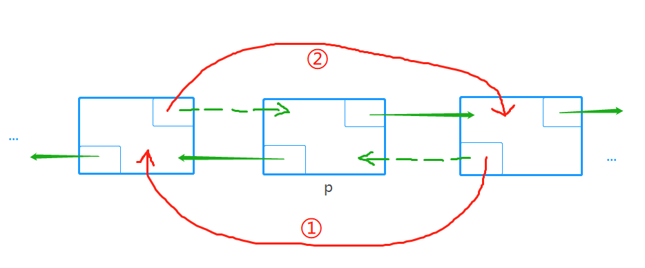

原文出处:本文由博客园博主街角de男孩提供。
原文连接:https://www.cnblogs.com/q964024886/p/11694670.html
原文连接:https://www.cnblogs.com/q964024886/p/11694670.html
1. 原理
LinkedList是基于双链表的动态数组，数据添加删除效率高，只需要改变指针指向即可，但是访问数据的平均效率低，需要对链表进行遍历。因此，LinkedList善于进行一些插入、删除操作，不利于进行检索操作。LinkedList和ArrayList这两个list在我们代码里会经常用到，因此，小编自定义实现LinkedList的简易版--MyLinkedList。
2. public API
void clear() --> 置空
boolean isEmpty() --> 判空
int size() --> 返回链表的长度
AnyType get(int idx) --> 根据索引检索元素
AnyType set(int idx) --> 根据索引跟新元素
boolean add(AnyType x) --> 添加元素x
boolean add(AnyType x，int idx) --> 根据索引添加元素x
AnyType remove(int idx) --> 根据索引删除元素x
String toString() --> 打印链表
3. 图解核心操作
-

-
doClear( ) 方法，初始化一个双链表，先定义一个头结点beginMarker，然后定义一个尾结点endMarker，前驱指向头结点，最后头结点的后继指向尾结点。

-
添加元素，先定义一个被添加元素x的节点，使它前驱指向被插入位置的前一个，后继指向被插入位置的节点，这是第一步，然后将被插入的前一个节点的next指向此节点，被插入位置的节点的prev指向此节点。

Node<AnyType> newNode = new Node<>(x, p.prev, p); // ①②
newNode.prev.next = newNode; // ③
p.prev = newNode; // ④当然，第三步和第四步可以合并：
Node<AnyType> newNode = new Node<>(x, p.prev, p); // ①②
p.prev = p.prev.next = newNode; // ③④没想到以上4步全可以合并为：
p.prev = p.prev.next = new Node<>(x, p.prev, p); // ①②③④精辟！
-
删除元素，根据索引找到对应的节点p，将p的后继的prev指向p的前驱，将p的前驱的next指向p的后继。

p.next.prev = p.prev;
p.prev.next = p.next;
-
检索节点getNode，LinkedList可以很快很方便地插入和删除元素，但是对于检索元素则就慢了，我们可以将索引分为前半部分和后半部分，如果索引在前半部分，我们就向后的方向遍历该链表；同样的道理，如果索引在后半部分，我们就从终端开始往回走，向前遍历该链表，这样可以提高一下检索速度吧。
// 从头结点开始向后找
if (idx < size() / 2) {
p = beginMarker.next;
for (int i = 0; i < idx; i++) {
p = p.next;
}
}
// 从尾节点开始向前找
else {
p = endMarker;
for (int i = size(); i > idx; i--) {
p = p.prev;
}
}
4. MyLinkedList代码实现
1 package com.hx.list;
2
3 /**
4 * @author: wenhx
5 * @date: Created in 2019/10/17 16:11
6 * @description: 用双链表实现MyLinkedList
7 */
8 public class MyLinkedList<AnyType> implements Iterable<AnyType> {
9
10
11 private int theSize;
12 private int modCount = 0;
13 private Node<AnyType> beginMarker;
14 private Node<AnyType> endMarker;
15
16 /**
17 * 内部类，定义链表的节点
18 */
19 private static class Node<AnyType> {
20
21 public AnyType data;
22 public Node<AnyType> prev;
23 public Node<AnyType> next;
24
25 public Node(AnyType d, Node<AnyType> p, Node<AnyType> n) {
26 data = d;
27 prev = p;
28 next = n;
29 }
30 }
31
32 /**
33 * 构造器
34 */
35 public MyLinkedList() {
36 doClear();
37 }
38
39 /**
40 * 判空
41 */
42 public boolean isEmpty() {
43 return size() == 0;
44 }
45
46 /**
47 * 清空
48 */
49 public void clear() {
50 doClear();
51 }
52
53
54 /**
55 * 返回链表的长度
56 */
57 public int size() {
58 return theSize;
59 }
60
61 /**
62 * 根据索引检索元素
63 */
64 public AnyType get(int idx) {
65 return getNode(idx).data;
66 }
67
68 /**
69 * 根据索引跟新元素
70 */
71 public AnyType set(int idx, AnyType newVal) {
72 Node<AnyType> p = getNode(idx);
73 AnyType oldVal = p.data;
74 p.data = newVal;
75 return oldVal;
76 }
77
78 /**
79 * 添加元素x
80 */
81 public boolean add(AnyType x) {
82 add(size(), x);
83 return true;
84 }
85
86 /**
87 * 根据索引添加元素
88 */
89 public void add(int idx, AnyType x) {
90 addBefore(getNode(idx, 0, size()), x);
91 }
92
93 /**
94 * 根据索引删除元素
95 */
96 public AnyType remove(int idx) {
97 return remove(getNode(idx));
98 }
99
100 /**
101 * 打印链表
102 */
103 public String toString() {
104 StringBuilder sb = new StringBuilder("[ ");
105
106 for (AnyType x : this) {
107 sb.append(x + " ");
108 }
109 sb.append("]");
110
111 return new String(sb);
112 }
113
114 /**
115 * 清空链表（实现）
116 */
117 private void doClear() {
118 beginMarker = new Node<>(null, null, null);
119 endMarker = new Node<>(null, beginMarker, null);
120 beginMarker.next = endMarker;
121 theSize = 0;
122 modCount++;
123 }
124
125 /**
126 * 根据索引检索节点
127 */
128 private Node<AnyType> getNode(int idx) {
129 return getNode(idx, 0, size() - 1);
130 }
131
132 /**
133 * 检索节点
134 */
135 private Node<AnyType> getNode(int idx, int lower, int upper) {
136 Node<AnyType> p;
137
138 if (idx < lower || idx > upper) {
139 throw new IndexOutOfBoundsException("getNode index: " + idx + "; size: " + size());
140 }
141
142 if (idx < size() / 2) {
143 p = beginMarker.next;
144 for (int i = 0; i < idx; i++) {
145 p = p.next;
146 }
147 } else {
148 p = endMarker;
149 for (int i = size(); i > idx; i--) {
150 p = p.prev;
151 }
152 }
153
154 return p;
155 }
156
157 /**
158 * 插入节点
159 */
160 private void addBefore(Node<AnyType> p, AnyType x) {
161 Node<AnyType> newNode = new Node<>(x, p.prev, p);
162 newNode.prev.next = newNode;
163 p.prev = newNode;
164 theSize++;
165 modCount++;
166 }
167
168 /**
169 * 删除节点p
170 */
171 private AnyType remove(Node<AnyType> p) {
172 p.next.prev = p.prev;
173 p.prev.next = p.next;
174 theSize--;
175 modCount++;
176
177 return p.data;
178 }
179
180
181 /**
182 * 返回一个迭代器对象，用于遍历链表
183 */
184 public java.util.Iterator<AnyType> iterator() {
185 return new LinkedListIterator();
186 }
187
188 /**
189 * LinkedListIterator迭代器的实现
190 */
191 private class LinkedListIterator implements java.util.Iterator<AnyType> {
192
193 private Node<AnyType> current = beginMarker.next;
194 private int expectedModCount = modCount;
195 private boolean okToRemove = false;
196
197 public boolean hasNext() {
198 return current != endMarker;
199 }
200
201 public AnyType next() {
202 if (modCount != expectedModCount) {
203 throw new java.util.ConcurrentModificationException();
204 }
205 if (!hasNext()) {
206 throw new java.util.NoSuchElementException();
207 }
208
209 AnyType nextItem = current.data;
210 current = current.next;
211 okToRemove = true;
212 return nextItem;
213 }
214
215 public void remove() {
216 if (modCount != expectedModCount) {
217 throw new java.util.ConcurrentModificationException();
218 }
219 if (!okToRemove) {
220 throw new IllegalStateException();
221 }
222
223 MyLinkedList.this.remove(current.prev);
224 expectedModCount++;
225 okToRemove = false;
226 }
227 }
228
229
230 /**
231 * 主方法：用来测试MyLinkedList
232 */
233 public static void main(String[] args) {
234 MyLinkedList<Integer> myLinkedList = new MyLinkedList<>();
235
236 for (int i = 0; i < 10; i++) {
237 myLinkedList.add(i);
238 }
239 for (int i = 20; i < 30; i++) {
240 myLinkedList.add(0, i);
241 }
242
243 System.out.println(myLinkedList.toString());
244 System.out.println("----------");
245 myLinkedList.remove(0);
246 myLinkedList.remove(myLinkedList.size() - 1);
247 System.out.println(myLinkedList);
248 System.out.println("----------");
249 java.util.Iterator<Integer> itr = myLinkedList.iterator();
250 while (itr.hasNext()) {
251 itr.next();
252 itr.remove();
253 System.out.println(myLinkedList);
254 }
255 }
256 }
完成，撒花，一个迷你版的LinkedList就写好啦，下次有空再写一个迷你版的ArrayList...
后记：
若有不当之处，可向小编反馈，一起交流学习，共同进步。
个人博客地址：https://www.cnblogs.com/q964024886/
GitHub地址：